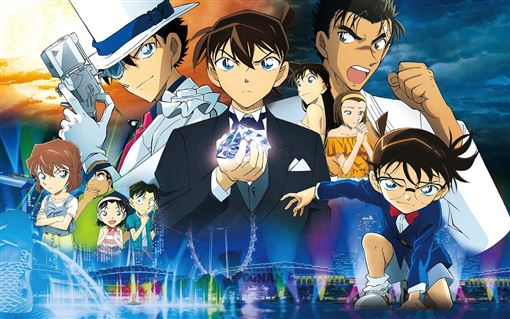

名偵探柯南
|  |
故事大綱 主角工藤新一原本是一位經常幫助警方破案的17歲高中生偵探； 某一天和青梅竹馬毛利蘭在熱帶樂園遊玩時目擊黑暗組織的可疑行動， 獨自前往交易現場時卻遭另一名同夥從背後偷襲擊昏，並灌下代號為「APTX-4869」的神秘藥物。 後來雖然倖免於死，但身體就此縮小為小學一年級時的模樣； 情急之下化名為江戶川柯南，在鄰居阿笠博士的建議下， 寄住在毛利蘭的父親毛利小五郎家中。同時他也憑藉著過人的推理能力， 以及使用阿笠博士為他發明的各種道具，讓小五郎成為全球知名的名偵探， 並藉由平時的案件調查努力找尋有關黑暗組織的線索，並和怪盜基德（黑羽快斗）展開精彩的對決。 |
| 故事情節 |
|
角色介紹
江戶川柯南外表看起來是小學生，其實他真正的身分是高中生偵探‧工藤新一。 被黑色組織灌下毒藥而身體縮小的他，為了隱藏真實身分， 以江戶川柯南之名寄住在青梅竹馬的毛利蘭家。 最喜歡的食物是檸檬派。生日是5月4日。 運動神經一流，很會踢足球，但卻是個音樂白痴。 眼鏡純粹是為了變裝用，實際上他並沒有近視。工藤新一帝丹高中二年級學生。擁有一流推理能力的高中生偵探。和毛利蘭是青梅竹馬。 被黑色組織灌藥而身體縮小的他，為了隱藏真實身分，化名為江戶川柯南。阿笠博士住在新一家隔壁的科學家。是新一父親的好友，也是少數知道柯南和新一是同一人的人物。 他所製作的偵探道具幫了柯南很大的忙。毛利小五郎小蘭的父親。以前是刑警，現在是毛利偵探事務所的所長。 雖然是個糊塗偵探，但因柯南在幕後進行事件的推理，而被世間認定為名偵探，也因陸續有委託者上門，本人也覺得自己是個名偵探。目暮警官警視廳搜查一課的資深警官。小五郎的前上司。 不少事件都是藉由新一與柯南的幫助而解決。小嶋元太柯南的同學，孩子王般的存在。 是個好吃鬼，最喜歡鰻魚飯。 講話雖然粗魯，其實也有溫柔善良的一面。 自稱少年偵探團團長。吉田步美柯南的同學。好奇心旺盛的女孩子。 喜歡什麼事都辦得到的柯南。圓谷光彥柯南的同學。 講話都很客氣，有些少年老成。對於自己的博學相當自負。 此外也對步美抱有好感。毛利蘭工藤新一的青梅竹馬。空手道社的女主將，擁有可在都大會獲得優勝的實力。 有強勢的一面，也有女孩子溫柔體貼的一面。不知道柯南真實身分的她，在照顧柯南的同時，也持續地等著新一的歸來。灰原哀柯南的同學。 真實身分為宮野志保，曾是黑色組織的一員。 是製造出使柯南身體縮小藥物的科學家。在組織裡的代號是雪莉。逃出組織時吃下和柯南相同的毒藥而使身體變小。 |